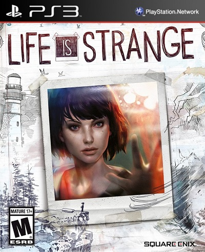

Life is Strange: Episodes 1-5 + Director's Commentary

Год выпуска: 2015
Жанр: Action / Adventure
Разработчик: DONTNOD Entertainment
Издательство: Square Enix
Язык Интерфейса: Русский
Язык Озвучки: Английский
Язык Субтитров: Русский
Код диска: NPEB02197
Формат: pkg
Описание:
Макс, студентка факультета фотографии, впервые за долгие годы возвращается в свой родной город, Аркадия-Бэй. Спася жизнь своей давней подруги Хлои, Макс обнаруживает в себе уникальный талант – она может обращать время вспять. Преследуемая предчувствием страшного будущего, Макс должна научиться понимать свою силу – и принимать последствия изменения прошлого.
picКогда подруга Макс Хлоя оказывается в опасностиr, Макс обнаруживает в себе странную и невероятную способность – она может поворачивать время вспять. Теперь, имея возможность возвращаться и делать выбор заново, обладая знанием будущего, Макс и Хлоя расследуют исчезноваение знакомой студентки, а Макс борется с предчувствием грядущей катастрофы.
picИсследуйте каждый вариант, узнайте последствия, а затем вернитесь и сделайте другой выбор в этом эпизодическом приключении. Приведут ли иные выборы к наилучшему для всех будущему или же к непредсказуемым событиям?
picИсследуйте странные способности Макс – и темную сторону Аркадия-Бэй – в этом эпизодическом приключении, в которым вы сможете отматывать время назад и менять свои решения. Но жизнь странная штука, и каждая попытка «исправить» прошлое может привести к еще более драматичному будущему.